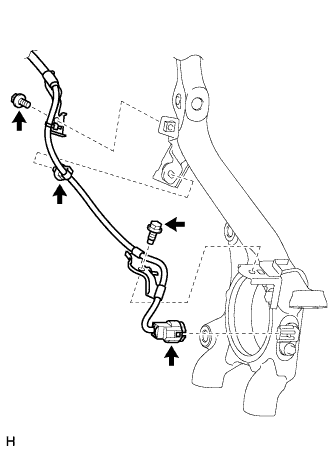
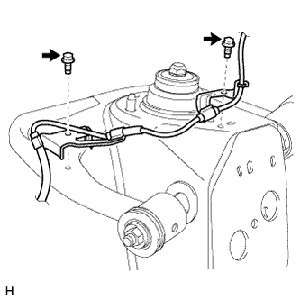
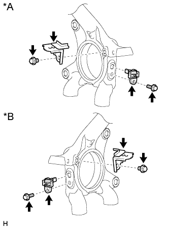

ПЕРЕДНИЙ ДАТЧИК ЧАСТОТЫ ВРАЩЕНИЯ > СНЯТИЕ |
| 1. СНИМИТЕ ПЕРЕДНЕЕ КОЛЕСО |
| 2. СНИМИТЕ ПРОВОД ПЕРЕДНЕГО ДАТЧИКА СИСТЕМЫ ПРОТИВОСКОЛЬЖЕНИЯ |
|  |
Отсоедините разъем от переднего датчика частоты вращения.
Выверните 2 болта и снимите 2 зажима жгута проводов.
Освободите фиксатор.
|  |
Выверните 2 болта и снимите 2 зажима жгута проводов.
Отсоедините разъем следующим образом.
| *A | Для левой стороны | *B | Для правой стороны |
Для левой стороны:
Для правой стороны:
| 3. СНИМИТЕ ЗАЖИМ ДАТЧИКА СИСТЕМЫ ПРОТИВОСКОЛЬЖЕНИЯ |
|  |
Выверните болт и снимите зажим датчика системы противоскольжения с кулака.
| *A | Для левой стороны |
| *B | Для правой стороны |
| 4. СНИМИТЕ ПЕРЕДНИЙ ДАТЧИК ЧАСТОТЫ ВРАЩЕНИЯ |
Выверните болт и снимите датчик частоты вращения с кулака.